Everything you need to write about the games. Screenshots and logos may be used freely in articles, videos and streams about the games.
Terrastate is a free grand strategy game in your browser. Lead one nation against 300 AI nations, form alliances and fight for the Nexus, the one region that decides the season. Romaterra is the same game in the age of Rome. Ironfront is a 1940s world at war where every tick is a decision.
Terrastate is a free, Planetarion-style grand strategy game that runs in the web browser on desktop and phone. You build an economy, raise an army, scout before you strike and join or found an alliance. Every season ends at the Nexus: build the Command Center on it and hold it, or win the Last Battle. The AI nations pay exactly what you pay and only know what they have scouted. A personal rival seeks you out every season and comes back next season remembering what happened.
Romaterra is the same game set in the age of Rome, with legionaries, cataphracts and war elephants, and the race to take Roma and hold the Imperial Palace.
Ironfront is the third era: a 1940s world at war with invented nations. It has its own prize, 2 of the 3 Capital Sectors, and its own battle layer: battle orders every tick, field works that race the enemy's arrival, radio intel with feints, and allied help that has to arrive in time.
What you play now is Season 0, the single-player training ground for a live multiplayer world that opens when 100 commanders have joined the waitlist on Discord.
Click an image for the full size.
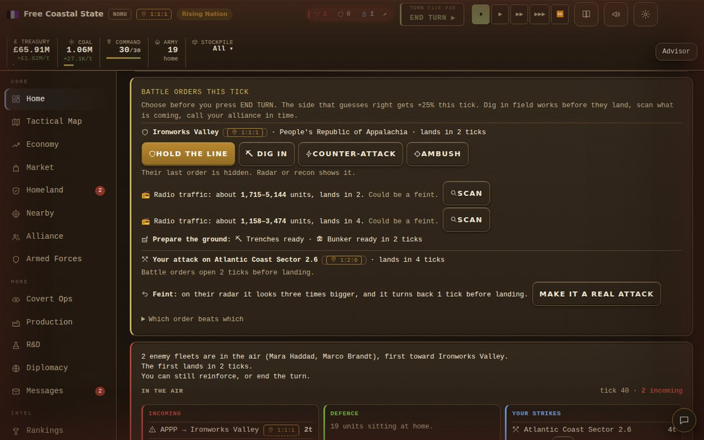
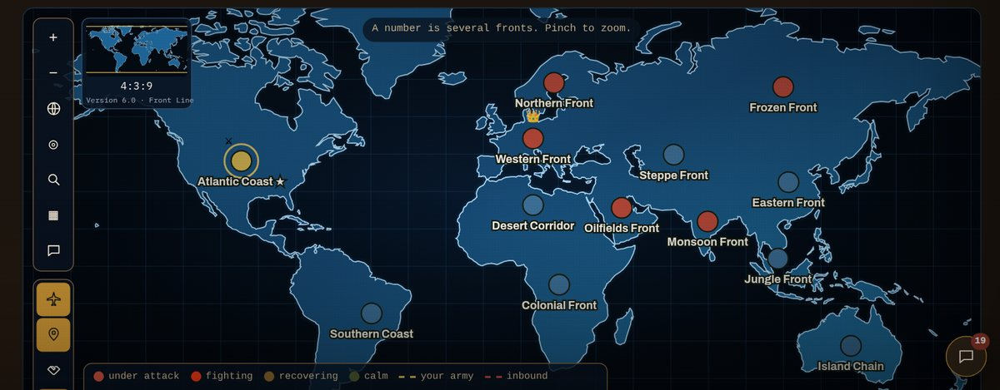
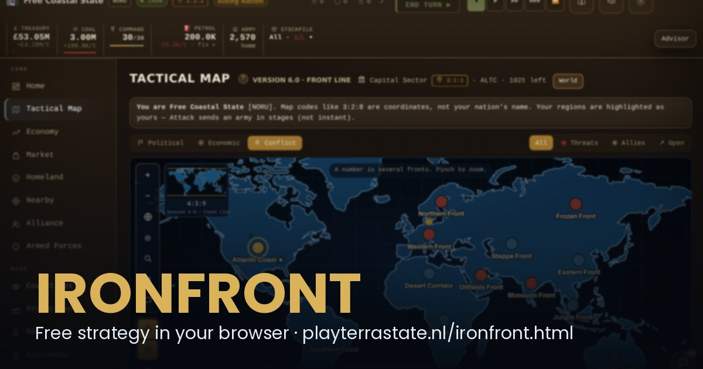
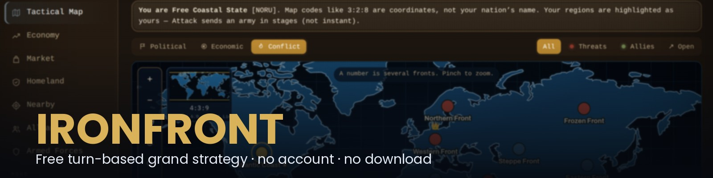
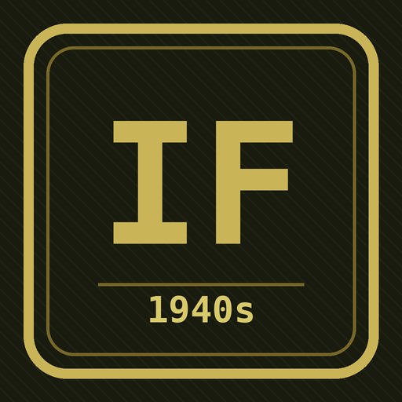
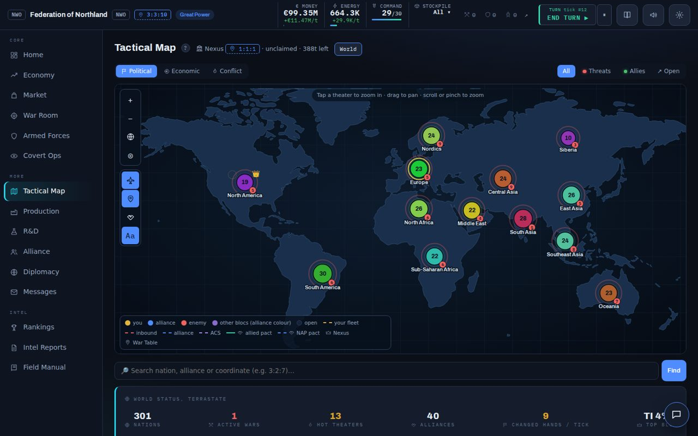
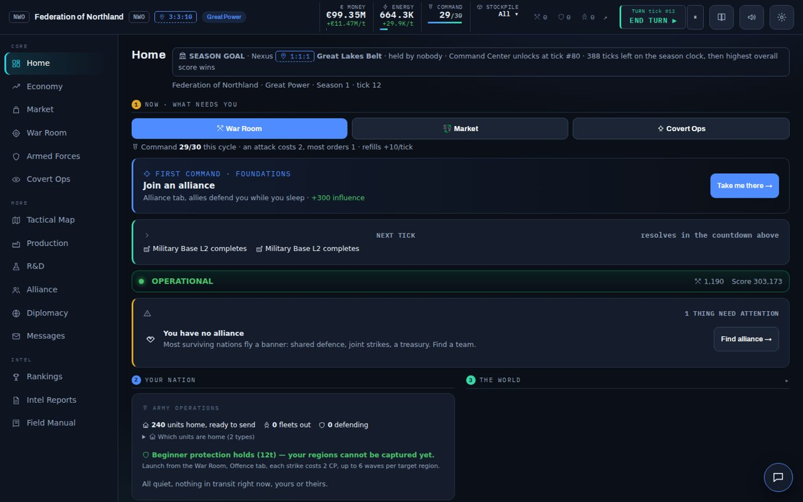
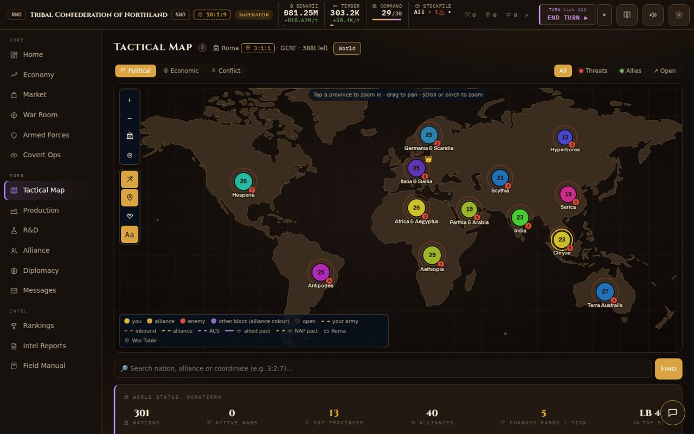
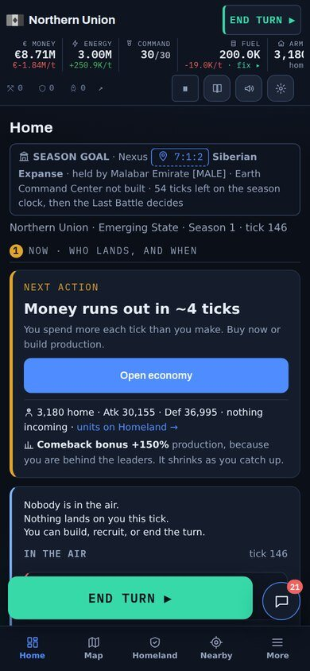
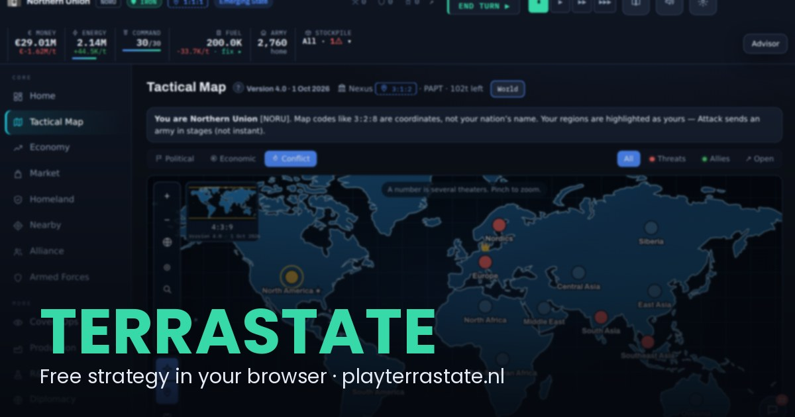
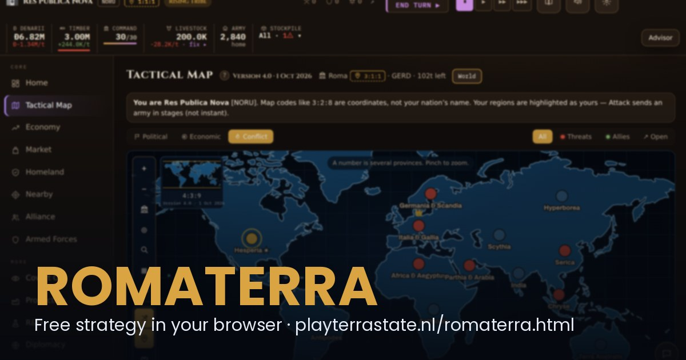
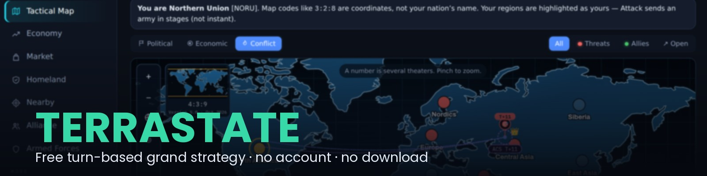
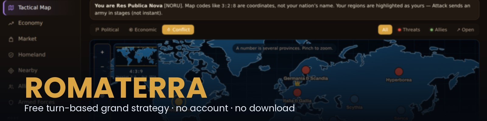
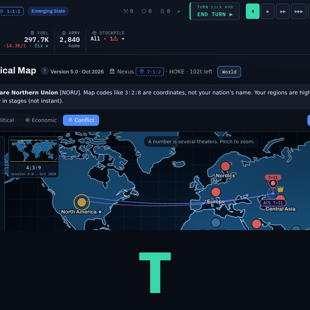
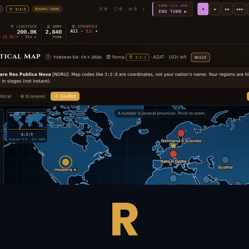